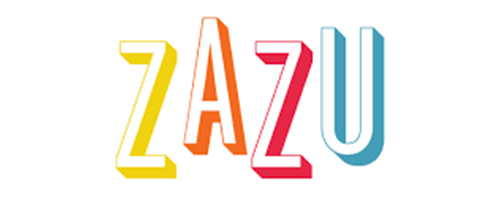
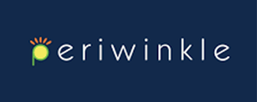

KW Move Communication Hub
Communications Hub site used as a centralized tool that serves as an online Playbook/HUB for Canadian employees who seeks information about their new office building which is currently under construction. The site provides a centralized repository of informational pages, news articles and announcements relating to their new office building.
HTML, CSS, JavaScript (Native, AJAX, & jQuery), and REST API
MTL Moving Forward Together Communication Hub
Communications Hub site used as a centralized tool that serves as an online Playbook/HUB for Montreal employees who seeks information about their new office building which is currently under construction. The site provides a centralized repository of informational pages, news articles and announcements relating to their new office building.
HTML, CSS, JavaScript (Native, AJAX, & jQuery), and REST API
Project Unite
Communications Hub site used as a centralized tool that serves as an online Playbook/HUB for Hong Kong employees who seeks information about their new office setup. The site provides a centralized repository of informational pages, news articles and announcements.
HTML, CSS, JavaScript (Native, AJAX, & jQuery), and REST API
Signature Series
A nomination and communications site used to nominate and inform candidates for John Hancock Signature Series speakers, The site also hosts a media archive containing various informational videos from TED Talks. It also serves as a video gallery for the previous speakers who participated on the event.
HTML, CSS, JavaScript (Native, AJAX, & jQuery), and REST API
Executive Hub
A business reporting site used to interpret quarterly business reports from different function heads. This site provides graphical representation of data and reports.
HTML, CSS, JavaScript (Native, AJAX, & jQuery), and REST API
Nex Move Bidding Site
A bidding site used to submit, track, and archive bids for office furniture and hardware listed for auction. In this site employees can monitor and track their bid history prior to the auction date. Site administrators can post new items or update the existing auction items from time to time.
HTML, CSS, JavaScript (Native, AJAX, & jQuery), and REST API
Internal Communications Hub
Communications Hub site used as a centralized platform for employee announcements, events calendar, seminar/training registration, and other HR related task and agendas. This site helps employees to become aware of various company events and important announcements by providing updated information online, delivered thru engaging and interactive site pages.
HTML, CSS, JavaScript (Native, jQuery), Native PHP and SQL

Sales monitoring web app
his is a web-based system used by store managers for the online submission of sales reports to the accounting and sales headquarters. The system enables the accounting departments to track and generate real-time sales reports for different store branches, thus eliminating the need to physically audit individual store reports
HTML, CSS, JavaScript (Native, jQuery), Native PHP and SQL

Sales monitoring web app
his is a web-based system used by store managers for the online submission of sales reports to the accounting and sales headquarters. The system enables the accounting departments to track and generate real-time sales reports for different store branches, thus eliminating the need to physically audit individual store reports
HTML, CSS, JavaScript (Native, jQuery), Native PHP and SQL